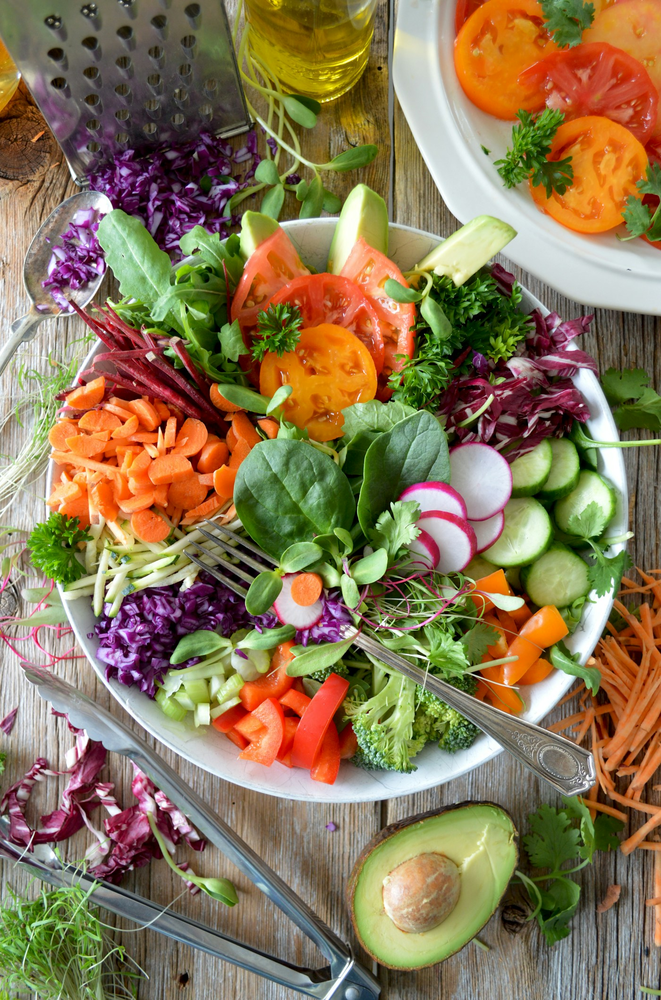
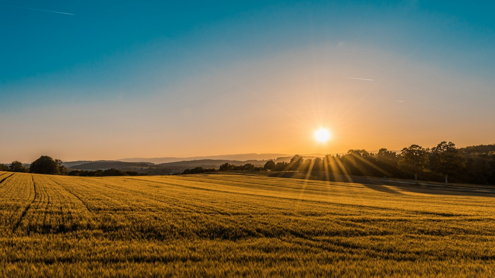
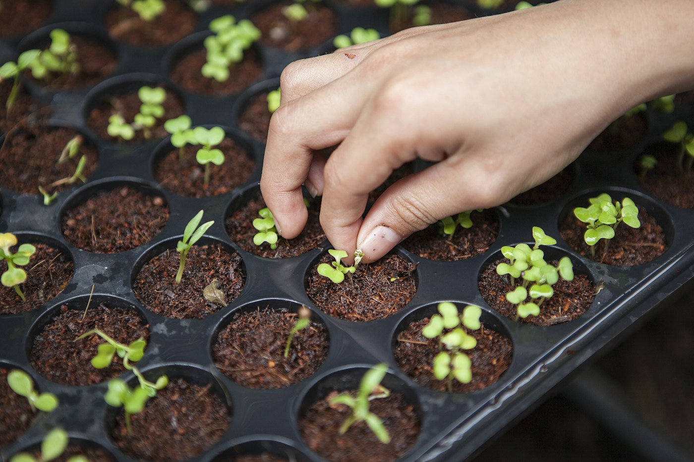

Fresh
Harvests selected for freshness and quality
LOCALLY GROWN • FRESHER TOMORROW
Supplying fresh local fruits and vegetables across Sarawak
OUR COMMITMENT
We are committed to providing fresh, safe, and reliable produce while supporting local communities and a healthier food future in Sarawak.
Harvests selected for freshness and quality

Safe produce for your peace of mind.

Consistent supply you can trust

Embracing innovation for a more sustainable future.
SMART AGRICULTURE
Technology-driven solutions for smarter, more sustainable farming in Sarawak.
We embrace technology and innovation to enhance productivity, ensure quality and build a more sustainable food supply for Sarawak.

Technology
for Healthier Food
and Greener Communities